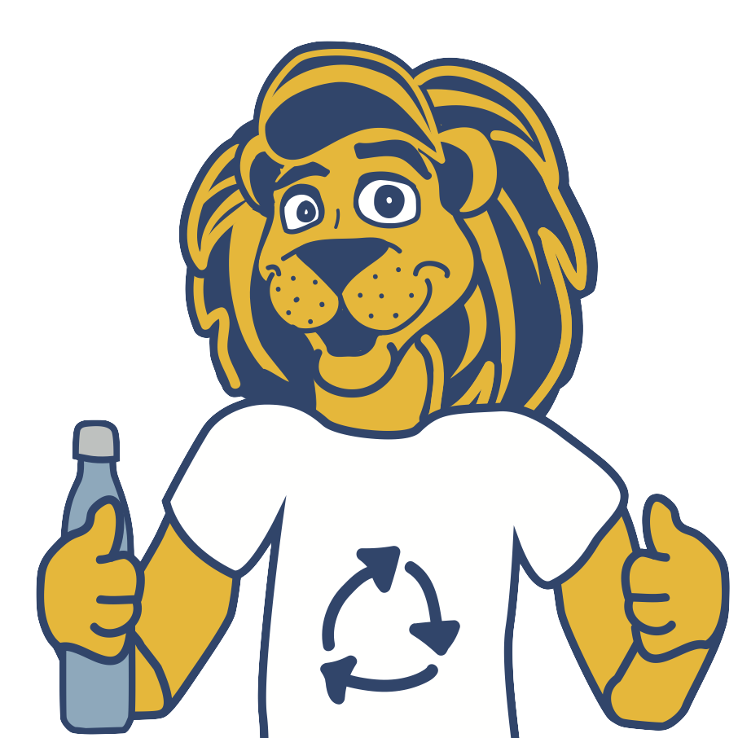

<ion-header [translucent]="true">
  <ion-toolbar>
    <ion-title>Home</ion-title>
    <ion-buttons slot="start">
      <!-- to display menu button that can be toggled -->
      
      <!-- <ion-side-menus enable-menu-with-back-views="true"> -->
        <ion-menu-button menu ="main-menu"></ion-menu-button>
      <!-- </ion-side-menus> -->
    </ion-buttons>
  </ion-toolbar>
</ion-header>

<ion-content [fullscreen]="true">

    <br> 
    <!-- page title, need to fix centering as it is not being centered -->
    <ion-item>
      <ion-title [innerHTML]="welcomeMsg"> </ion-title>
    </ion-item>
    
    <ion-list-header>Not sure where something goes? </ion-list-header>
    <ion-item>
      <ion-thumbnail slot="start">
        <!-- placeholder image for logo or Roscoe image -->
        <!--  -->
        
        <!--  -->
      </ion-thumbnail>
      <ion-label>Ask Roscoe!</ion-label>
    </ion-item>

    <!-- onClick() routes you to the whatgoeswhere page to use the search bar -->
    <!-- on this page the search bar is not actually functional, it is just meant to link you to the other page as seen in recycle coach -->
    <ion-searchbar (click)="onClick($event)"></ion-searchbar>

    <ion-item>
      <!-- link to campusresources page to display provided links -->
      <a [routerLink]="['/campusresources']" class="small-text">TCNJ Recycling Guidelines</a>
    </ion-item>


  <ion-card>
    <ion-card-header>
      <ion-card-title>Events for today: </ion-card-title>
      <!-- prints current date -->
      <ion-card-subtitle>{{today | date}}</ion-card-subtitle>
    </ion-card-header>
  
    <ion-card-content>
      <!-- List of Text Items -->
      <ion-list>
        <ion-item *ngFor="let test of events">
          <ion-label [innerHTML]="test.name">Event 1</ion-label>
        </ion-item>
      </ion-list>
      <!-- link to calendar page to display all events -->
      <a [routerLink]="['/schedule']" class="small-text">View all events</a>
    </ion-card-content>
  </ion-card>

</ion-content>
